what it is
Hanok is a traditional Korean house.
Hanoks were first designed and built in the 14th century during the Joseon Dynasty.
structure
giwa
cheoma

"Hanok have a colorful patterns all over.those are quite showy but dosen't look complicated. cause it's following the 'O-bang'color which means traditional 5color combination of Korea and use that colors sensitively."
"According to the latest legal definition, the hanok is a wooden architectural structure built on the basis of the traditional Korean-style framework consisting of columns and purlins and a roof reflecting the Korean traditional architectural style."
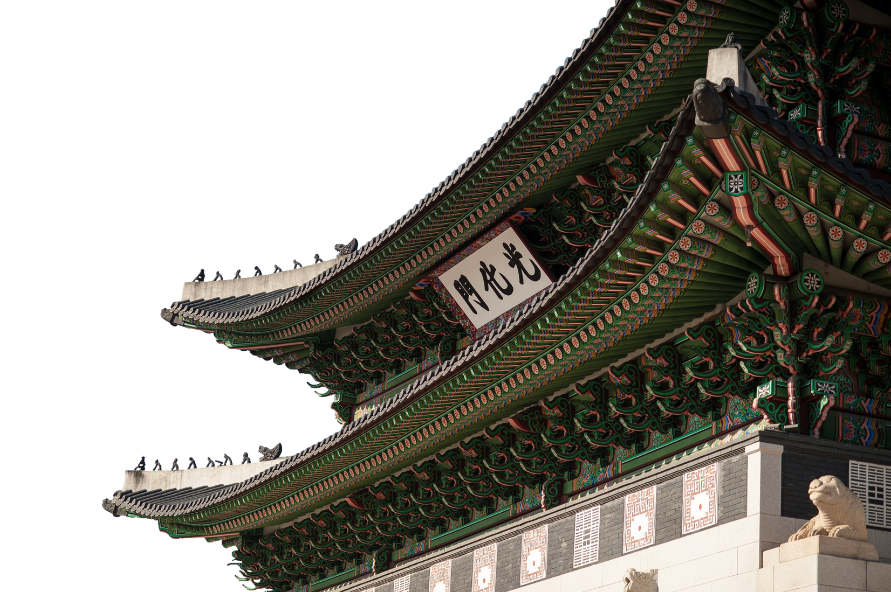

The house used Giwa, a kind of roofing tile which was made with baked soil. By using Giwa roof tiles, hanok developed a specific shape.
Cheoma is the edge of Hanok's curvy roofs. it makes hanok looks more attractive.The lengths of the Cheoma can be adjusted to control the amount
of sunlight that enters the house.
because of this, As you go down to
the south asian country, you can see the cheoma angle are more raised due to sun angle.
seokkarae


 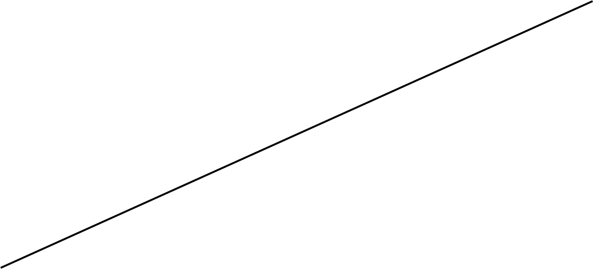
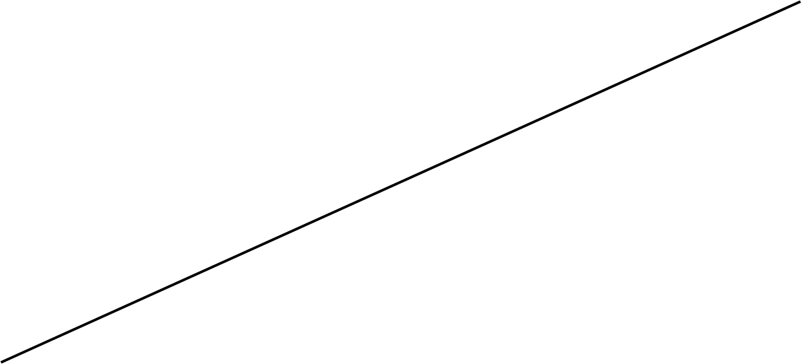


Seokkarae is the part that constitutes the skeleton of roof. it makes a unique view when you get inside of hanok. just to watch seokkarae, it will give you a sense of visual stability.
Daedulbo
is a skeleton that
traverses the pillars
and supports the roof.
in the past,thicker daedulbo
means that the house
owner has lots of money.
daedulb
o
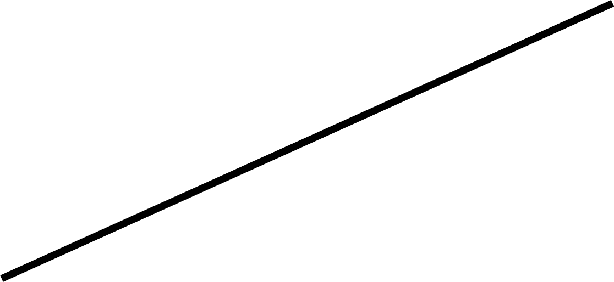"Hanok is a wooden architectural structure built on the basis of the traditional Korean-style framework consisting of columns and purlins and a roof reflecting Korean traditional architectural style. The term "hanok" was originally used to refer to all traditional Korean buildings, including the grand architectural works of royal palaces,Buddhist temples and Confucian shrines, but today its use generally limited of private dwelling houses."

yongmaru

Yongmaru is horizontal part of the center of the building roof.The curve of the 'ridge' is low at the center and goes up to both sides. These curves vary somewhat from region to region. Going to the southern region, you go to both sides of the 'ridge' and adjust the curvature by increasing the number of giwa.

juchutdol

Juchutdol is a stone that supports the pillars of building. In the old days, it used unprocessed natural stones, but nowadays usually used processed stones.
"The word hanok, in fact, encompasses a variety of traditional Korean buildings which come in a great diversity of shapes and layouts according to the region and period, and many of whose origins are not clearly documented. The hanok has undergone numerous changes throughout its history, some significant, others not, and has continued to evolve as a result of outside cultural influences. Historians have presented widely different views about the origins and development of hanok, making it difficult to elaborate a simple, clear-cut definition."
"Discussions about the term ‘hanok’ have been held by Korean legal authorities as well. According to the latest legal definition, the “hanok is a wooden architectural structure built on the basis of the traditional Korean-style framework consisting of columns and purlins and a roof reflecting the Korean traditional architectural style.” The law also provides a definition of the term, “hanok architectural style,” stating that it can be used to refer to buildings featuring the shape and structure of a hanok even when built with modern materials and techniques."
daechung

 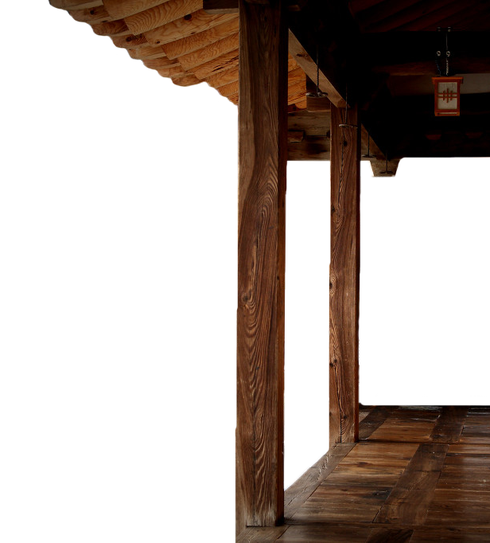
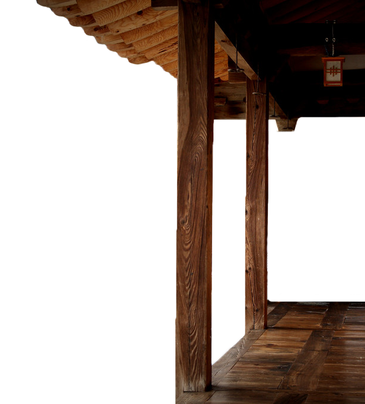
 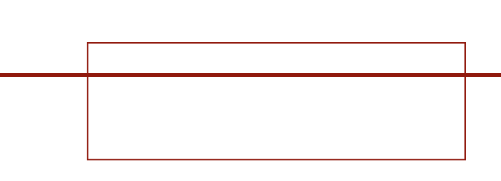
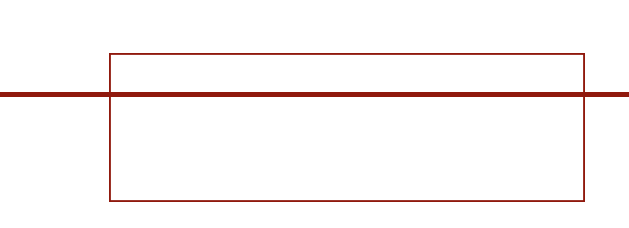
Daechung is a large floor between the room. most people misunderstand that the name of daechung is daechung-maru, but it’s wrong. maru is just one of daecheong. and daechung’s material and structure of the floor are woven into a wooden structure.
"The use of the term “hanok” is limited to building that are considered to be of value and preservedas public good. accordingly, the standard of judgment for “hanok”are “tiled roof” and “wooden framing”, while the additional elements are “Korea’s traditional architectural aesthetics” and the “use of natural materials."
"Discussions about the term ‘hanok’ have been held by Korean legal authorities as well. According to the latest legal definition, the “hanok is a wooden architectural structure built on the basis of the traditional Korean-style framework consisting of columns and purlins and a roof reflecting the Korean traditional architectural style.” The law also provides a definition of the term, “hanok architectural style,” stating that it can be used to refer to buildings featuring the shape and structure of a hanok even when built with modern materials and techniques."
 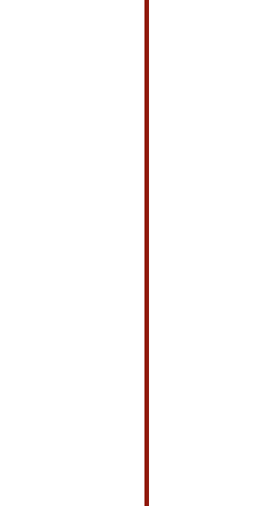
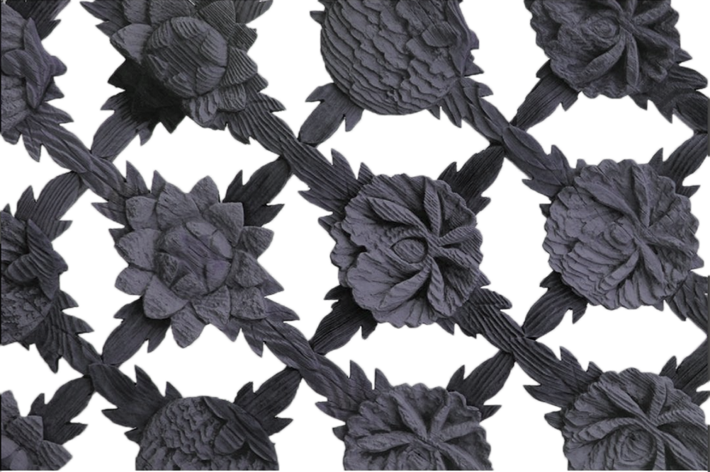
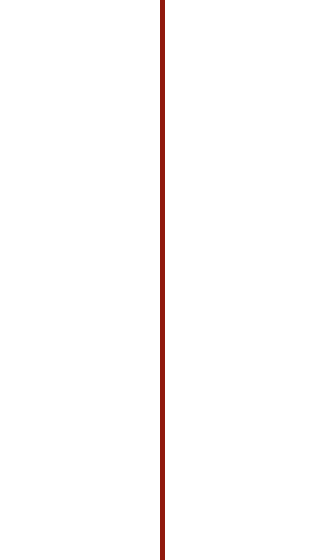
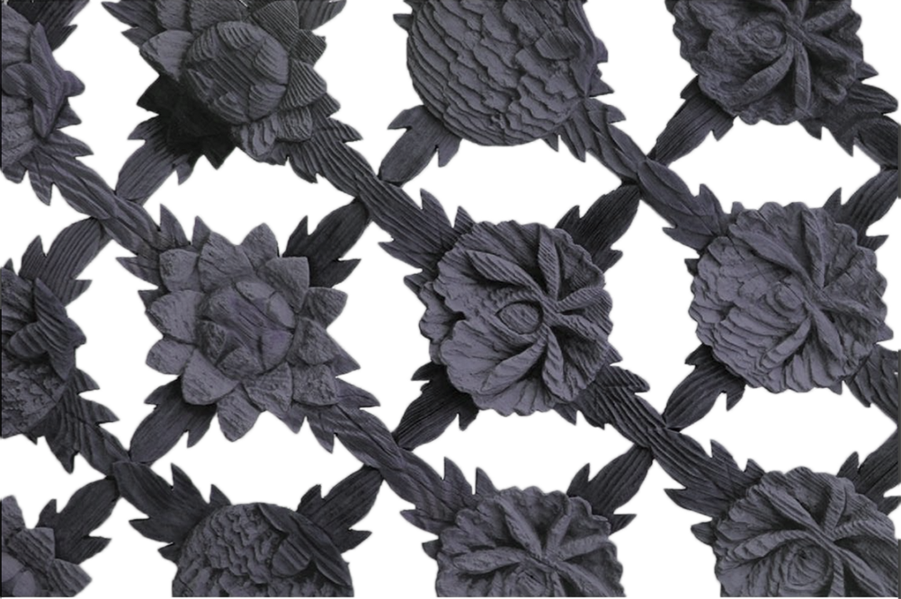
Hanok is a house of nature.
that made of nature ingredients.
such as wood,stone,soil.